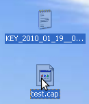
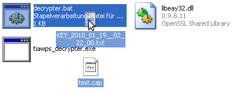
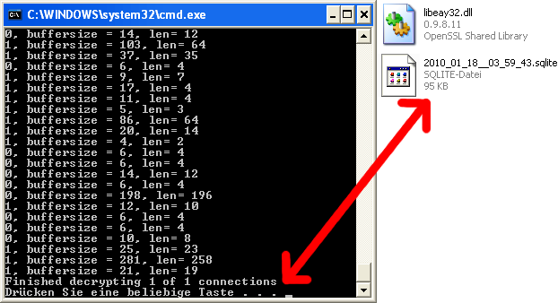

Tiawps documentation
Tiawps is a tool for decrypting sniffed wow sessions and storing them in sqlite databases. Sniffing and decrypting are separated processes.
Guide
- Get a sniffer which is able to store in the libpcap format. Tcpdump and Wireshark are known to do this.
- Start sniffing everything on TCP port 3724.
- Start wow and log in.
- Use reader.bat to extract the encryption key from the running wow process. A KEY*.txt file will be created.
- Play around and do whatever you want to
- Stop wow and stop sniffing
- Save the sniffer dump in a libpcap compatible format

- Drag both KEY*.txt and *.cap to decrypter.bat

- You should now see a window which says "Finished decrypting 1 of 1 connections". A *.sqlite should have been created which contains the decrypted session.
